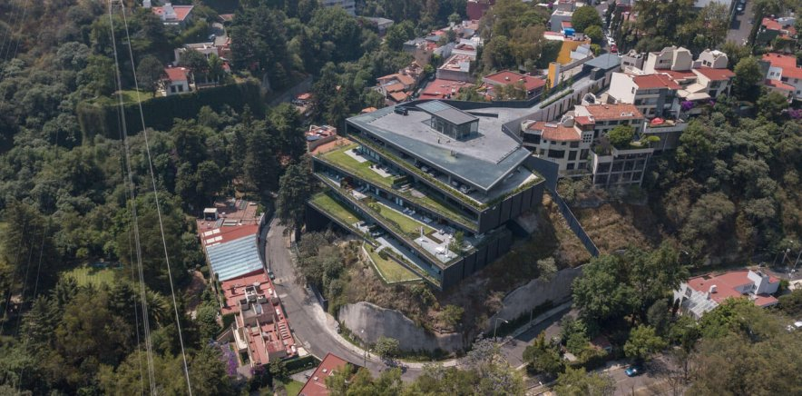
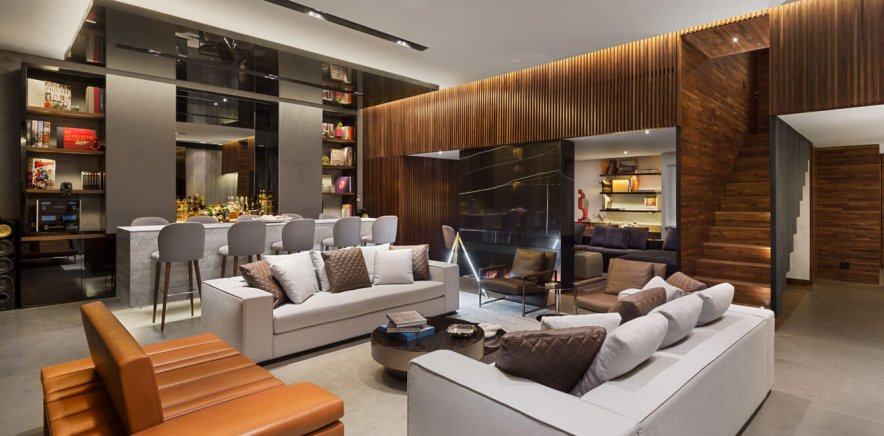
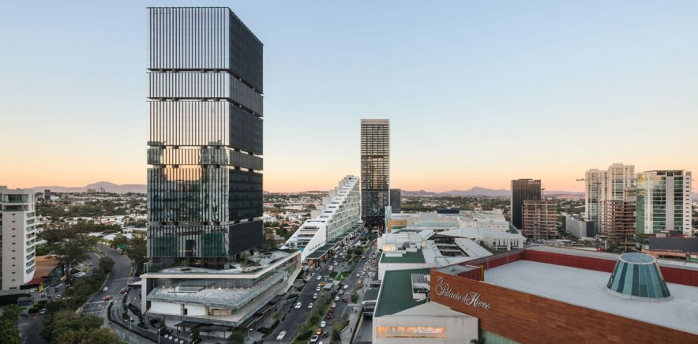

Con una amplia diversidad de proyectos realizados durante más de 80 años, incluyendo proyectos comerciales, residenciales, hoteleros, de edificios corporativos y de complejos de usos múltiples, Sordo Madaleno Arquitectos es uno de los estudios de arquitectura líderes en México. En SMA se trata a cada proyecto como único, tomando en consideración la importancia de la colaboración directa con nuestros clientes. Nuestro equipo laboral incluye arquitectos, diseñadores, ingenieros y especialistas urbanos, quienes a través de la práctica total del diseño combinan su experiencia. Nuestro estudio ha demostrado que la arquitectura, a través de la creación de nuevas condiciones urbanas, tiene la capacidad de cambiar el modo de vida de las personas. Hemos desarrollado proyectos con un grado de presencia que ha fortalecido la actividad comercial en los respectivos entornos, promoviendo el desarrollo económico de la zona y fomentando la interacción social.

Como sección independiente, el estudio de arquitectura ha crecido con un equipo especializado en diseño interior que puede operar como parte de un proyecto arquitectónico completo, o que puede ser contratado en forma independiente. El equipo le presta especial atención al detalle, aplicando un estilo delicado y un uso original de materiales, colores y texturas. Nuestros proyectos a menudo incluyen prácticas de diseño industrial que refuerzan la unicidad de los espacios. La constante consideración del detalle les da a los proyectos una dimensión sofisticada y atemporal. El análisis exhaustivo de los materiales, de la iluminación y de los esquemas de colores brinda un diseño creativo e innovador que no solo es acorde con las necesidades de nuestros clientes, sino que además con frecuencia excede sus expectativas. Hemos tenido la oportunidad de trabajar en proyectos de diferentes escalas, que van de casas unifamiliares a restaurantes mundialmente reconocidos, hospitales, hoteles y edificios corporativos.

El correcto diseño y planificación urbana transforma ciudades, paisajes y regiones que mejoran la calidad de vida de las personas. Nuestro proceso de diseño urbano se basa en un trabajo interdisciplinario entre colaboradores internos y externos. Contamos con la experiencia para desarrollar soluciones integrales en diferentes escalas, usos y complejidades. Buscamos conseguir el máximo potencial de los proyectos para crear lugares que sean sostenibles, dinámicos, progresivos y comercialmente viables. Nuestro alcance va desde la proyección de planes maestros y regeneración urbana, hasta planificación de centros de ciudad y espacio público.
TORRE REFORMA COLÓN PUERTA LA REFORMA
Tel: +52 (55) 5251 8104
Contacto general: info@sma.com.mx
Prensa: publicaciones@sma.com.mx
Nuevos proyectos: projects@sma.com.mx
Comercialización: comercializacion@sma.com.mx
Recursos Humanos y Vacantes: rh@sma.com.mx